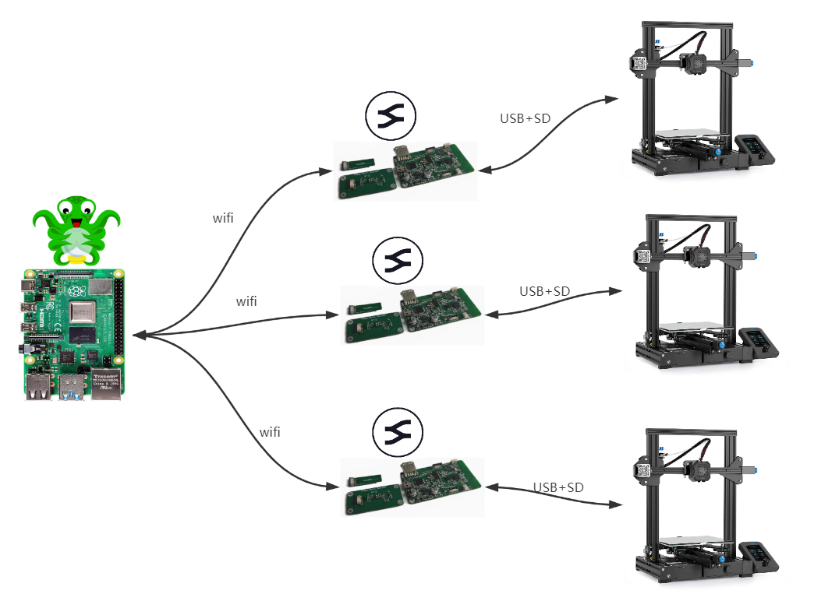

API&OctoBeam
1. API接口描述
本文档用于描述BeamNode模块的API设计。
1.寻找设备API
简要描述
- 提供一个http的API，让客户端扫描发送，如果ESP32收到这个API，会返回自己的设备名
- 如果是之前已经连接过，会返回当前设备的状态
请求URL
- http://192.168.1.133:88/find
请求方式 - GET
参数
- 无
返回示例
Beam-ESP32-Name:192.168.1.133:PRINTING
注意:如果是在打印中，才会返回后面的PRINTING,第一次连接，不会返回改字符串
2. 获取文件目录信息
简要描述
- 获取SD卡中所有的文件目录信息
请求URL
- http://192.168.1.133:88/list?dir=/
请求方式 - GET
参数 - 无 返回示例
[
{"type":"dir","name":"/System Volume Information"},
{"type":"file","name":"/castle.zip"},
{"type":"file","name":"/config.txt"}
]
返回参数说明
| 参数名 | 类型 | 说明 |
|---|---|---|
| type | 字符串 | 当前这个name的类型，文件还是目录 |
| name | 字符串 | 文件或者目录名称 |
备注
- 当前使用的ESP32文件系统，不支持文件夹的访问，因此所有的打印文件都要放在sd卡的根目录下面
3. 上传文件
简要描述
- 用户上传文件
请求URL
- http://192.168.1.133:88/edit
请求方式 - POST
参数
- 以表单的方式上传文件
返回示例
- 上传完成，返回ok
返回参数说明
- 无
备注
- 无
4. 删除文件
简要描述
- 用户删除sd卡中的文件
请求URL
- http://192.168.1.133:88/remove?path=/xxx.gcode
请求方式 - DELETE
参数
- 在url中指定path=/xxx.gcode ，就是要删除的那个文件
返回示例 - 删除完成，返回ok
返回参数说明 - 无
备注 - 无
5. 发送PC地址给ESP32,建立socket并连接BeamNexcus
简要描述
- 发送PC本机的IP地址给ESP32，ESP32收到后，会创建一个socket，来连接PC端的socket，这样建立一个长连接， ESP32就可以主动发送信息给PC端，通知他做一些事情
请求URL
- http://192.168.1.133:88/pcsocket?ip=192.168.1.1
请求方式 - GET
参数 - 在url中指定PC自己的IP地址
返回示例 - 创建完成，返回ok
返回参数说明 - 无
备注 - 无
6. 发送Gcode控制指令
简要描述
- 使用url发送一条Gcode指令给ESP32,ESP32收到后会立即发送给打印机
请求URL
- http://192.168.1.133:88/gcode?gc=G28 X Y
请求方式 - GET
参数 - 在url中指定设定要发送的Gcode指令
返回示例 - 创建完成，返回ok
返回参数说明 - 无
备注 - 无
7. 开始打印
简要描述
- 在url中指定一个sd卡中包含的文件，通知esp32进行打印
请求URL
- http://192.168.1.133:88/print?filename=/xxx.gcode
请求方式 - GET
参数 - 在url中指定设定要发送的Gcode指令
返回示例 - 执行完成，返回ok
返回参数说明 - 无
备注 - 打印的文件，都是从前面的获取到的sd卡文件列表中选取的
8. 控制打印暂停，恢复，取消
简要描述
- 通过url控制打印机打印，暂停，取消，恢复
请求URL
- http://192.168.1.133:88/operate?op=PAUSE
请求方式 - GET
参数 - PAUSE - RECOVER - CANCLE
返回示例 - 执行完成，返回ok
返回参数说明 - 无
备注 - 无
9. 获取打印机的状态
简要描述
- 获取打印机的一些状态字符串，包括: 喷头温度，热床温度，总层数，当前打印层数
请求URL
- http://192.168.1.133:88/status
请求方式 - GET
参数 - 无
返回示例 - 执行完成，返回ok
返回参数说明 - 返回的是一些列的字符串，前端得到这些数据后，需要使用正则来获取自己想要的信息，一个典型的返回字符串如下:
;LAYER_COUNT:90,;LAYER:4,
B: 23.4 /40 T: 100.3/210
备注 - 此处返回的是打印机直接返回的内容，属于直接转发，这个url可以每间隔几秒发送一次，以此来更新前端的显示状态
2. OctoBeam Python库介绍

OctoBeam Python库的作用是提供一个Python接口，来实现上一章里面提到的BeamNode控制接口。用户通过OctoBeam的方法，可以方便直接与BeamNode对话，获取各种关键信息。OctoBeam的github地址: https://github.com/fiberpunk1/OctoBeam